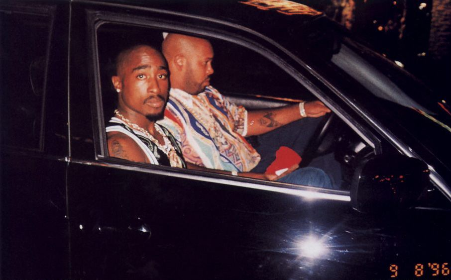

Tupac Shakur attended the Bruce Seldon vs. Mike Tyson boxing match with Marion "Suge" Knight, the head of
Death Row Records, at the MGM Grand in Las Vegas, Nevada.
After leaving the match, one of Knight's associates, Travon "Tray" Lane, a member of the M.O.B. Pirus gang
based in Compton, California, spotted Orlando "Baby Lane" Anderson, from the rival Southside Crips gang, in
the MGM Grand lobby.
Earlier that year, in May 1996, Anderson and a group of Southside Crips attempted to rob Lane in a Foot
Locker store.
Lane told Shakur, who in turn attacked Anderson in the lobby. Shakur asked Anderson if he was from the
"South" (Southside Crips) and punched him in the face, knocking him to the ground. Shakur and Knight's
entourage assisted in assaulting Anderson. The fight, which was captured on the MGM Grand's video
surveillance, was broken up by hotel security.
After the brawl, Shakur went with Knight to Club 662 (since closed), which was owned by Knight.
Shakur disclosed to girlfriend Kidada Jones his involvement in the Anderson fight, previously having
promised to return to her after entering the MGM Grand and having her stay in a vehicle. Shakur left with
Knight after changing clothes.
Shooting

At 11:10 p.m. (PDT), while they were stopped at a red light at the intersection of East Flamingo Road and
Koval Lane in front of the Maxim Hotel, a vehicle occupied by two women pulled up on their left side.
Shakur, who was talking through the window of his BMW sedan, exchanged words with the two women, and invited
them to go to Club 662.
At 11:15 p.m. (PDT), a white, four-door, late-model Cadillac pulled up to Knight's right side. Anderson,
seated at the back of the Cadillac, rolled down the window and rapidly fired gunshots from a .40 S&W Glock
22 at Shakur's BMW.
Shakur was hit four times – twice in the chest, once in the arm, once in the thigh. One of the bullets went
into Shakur's right lung. Knight was hit in the head by fragmentation.
Despite Knight's injuries, and his vehicle having a flat tire, he was able to drive Shakur and himself a
mile from the site, to Las Vegas Boulevard and Harmon Avenue. They were again pulled over by the Bike
Patrol, who alerted paramedics through radio.
After arriving on the scene, police and paramedics took Knight and Shakur to the University Medical Center
of Southern Nevada.
While in the critical care unit on the afternoon of Friday, September 13, 1996, Shakur died of respiratory
failure that led to cardiac arrest after the removal of his right lung. Doctors attempted to revive him, but
could not stop the hemorrhaging. His mother, Afeni, made the decision to cease medical treatment.
He was pronounced dead at 4:03 pm (PDT).
Investigative reports on the murder
One year after the shooting, Sgt. Kevin Manning, who headed the investigation, told Las Vegas Sun
investigative reporter Cathy Scott that Shakur's murder "may never be solved".
The case slowed early in the investigation, he said, as few new clues came in and witnesses
clammed up. E.D.I. Mean, a collaborator of Shakur's and a member of Outlawz, said he was positive law
enforcement knew "what happened" and added, "This is America. We found bin Laden."
In 2002, the Los Angeles Times published a two-part story by Chuck Philips, titled "Who
Killed Tupac Shakur?" based on a year-long investigation. Philips reported that "the shooting was carried
out by a Compton gang called the Southside Crips to avenge the beating of one of its members by Shakur a few
hours earlier. Orlando Anderson, the Crip whom Shakur had attacked, fired the fatal shots.
Las Vegas
police considered Anderson as a suspect and interviewed him only once, briefly. Anderson was killed nearly
two years later in an unrelated gang shooting." Philips's article also implicated East Coast rappers,
including The Notorious B.I.G., Tupac's rival at the time, and several New York City criminals.
The second article in Philips' series assessed the murder investigation and said that Las
Vegas police had mismanaged the probe.
His article stated that missteps of Las Vegas police were: (1) discounting the fight that occurred just hours before the shooting, in which Shakur was involved in
beating Anderson in the MGM Grand lobby;
(2) failing to follow up with a member of Shakur's entourage who witnessed the shooting, who told Las
Vegas police he could probably identify one or more of the assailants, but was killed before being
interviewed; and
(3) failing to follow up a lead from a witness who spotted a white Cadillac similar to the car from which
the fatal shots were fired and in which the shooters escaped.
Haaretz, an Israeli newspaper, reported in 2011 that the FBI released documents, as a result
of a Freedom of Information Act request, revealing its investigation of the Jewish Defense League for
extorting protection money from Shakur and other rappers after making death threats against them. In 2017,
Knight claimed he might have been the target of the attack that killed Shakur, arguing that it was a hit on
him as a staged coup to seize control of Death Row Records.